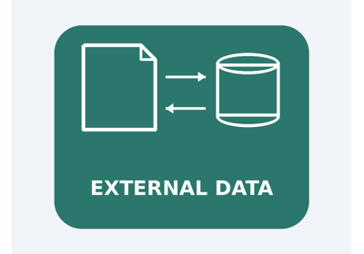
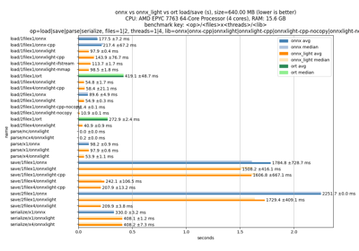

Examples#
A collection of examples showing how to use onnx-light.
Core examples#
Examples demonstrating the core features of onnx-light.

Compares the Python API of onnx and onnx_light.onnx
Compares the Python API of onnx and onnx_light.onnx

Load and save ONNX models with external data
Load and save ONNX models with external data

Measures loading and saving time for an ONNX model
Measures loading and saving time for an ONNX model